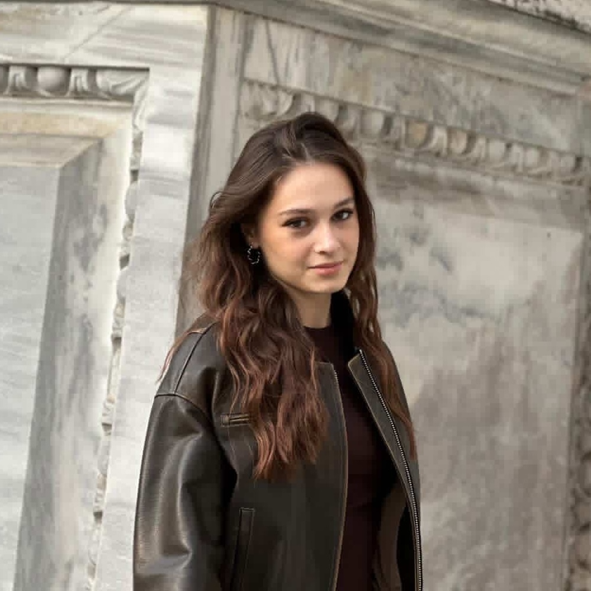

Edesa Ibrahimi
Kosova
Hi! I’m Edesa! I live in Prishtina, Kosova, and I love building things that make STEM feel exciting, creative, and welcoming for everyone. I founded my own nonprofit, Mapping the Future with STEM, where I work with other young people to explore coding, innovation, and hands-on learning together. Outside of STEM, I love meeting new people, hiking, running, and doing CrossFit.